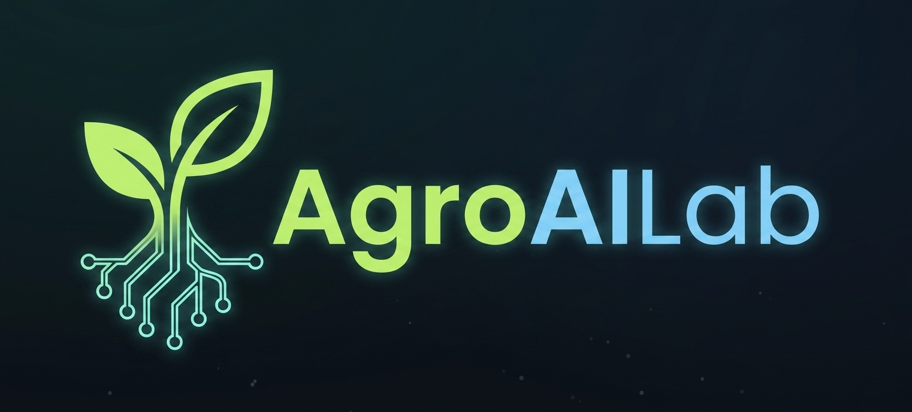

Desarrollamos una plataforma que integra sensores de bajo coste, diseño 3D paramétrico y machine learning para optimizar el metabolismo vegetal, reduciendo drásticamente el consumo de agua y energía.
Los modelos de regresión multivariable y redes neuronales ligeras establecerán correlaciones entre las entradas y salidas. Actualmente desarrollamos el hardware de adquisición y recopilamos datos sintéticos. El MVP (Verano 2026) permitirá entrenar los primeros modelos con datos reales.
Hemos diseñado una cámara de crecimiento modular fabricada mediante impresión 3D (PETG/ASA) que integra:
El diseño está disponible en formato STEP/STL y será de acceso abierto tras la validación del MVP.
Simulaciones de fluidos, selección de componentes low‑cost, primeras pruebas de nebulización e iluminación.
Modelado 3D de la cámara, definición de PCB, comunicación MQTT, desarrollo del dashboard base.
Construcción del primer prototipo para 2-3 plantas. Validación con albahaca, adquisición de datos reales y lazos de control autónomo.
Ampliación a bancada de 12 plantas, integración de análisis químico externo (cromatografía de gases) y refinamiento del modelo predictivo.
El gráfico muestra la normalización (0-100) de cuatro métricas clave. Permite visualizar de forma intuitiva cómo los parámetros ajustados afectan el rendimiento general de la planta. El objetivo del proyecto es validar estas relaciones en un entorno real y automatizar el control mediante IA.
o escríbenos directamente a contacto@agroailab.com